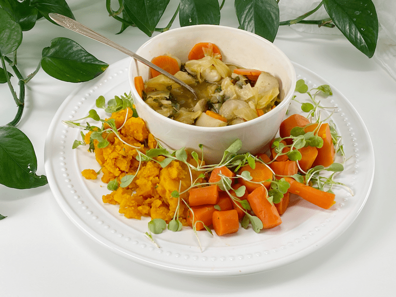

Beta-Carotene Rich Lunch | Plates of Inspiration
Today was another fun-filled day working in the kitchen. I was in the zone, and when I get in the zone, it’s hard for me to slow down enough to eat a meal. BUT I am working on that. Self-care has always been at the bottom of the list, but step by step, I am climbing the ladder of self-love, and one way I can do that is through nourishing my body with nutrient-dense food. Yesterday, I batch cooked for the week. So lunch was filled with leftovers–I had a bowl of my End of the Week Soup, steamed carrots, and kombucha squash.

I must say that I love veggies of all hues of color, but today, unconsciously, I plated myself nothing but orange. I guess my body was telling me something. Orange vegetables contain zeaxanthin, flavonoids, lycopene, potassium, vitamin C, and beta-carotene, which is vitamin A. The benefits includ:
- Aids in eye health and reduces the risk of macular degeneration of the eye–No issues there.
- Reduces the risk of prostate cancer–Hmm, nope.
- Lowers blood pressure–Nope, my BP is spot on.
- Lowers LDL cholesterol (the bad cholesterol)–My cholesterol is good.
- Promotes healthy joints —I’ll take a little of that.
- Promotes collagen formation–Oh, man, dose me up!
- Fights harmful free radicals in the body–I am thankful for that.
- Encourages pH balance of the body–Mine should be fine, but one hard to tell what’s going on under the hood.
- Boosts immune system–Perfect timing for that! (COVID-19)
- Builds healthier bones by working with calcium and magnesium–We can all benefit from this.
Actually, as I was typing this, I reflected on what I ate today. Breakfast was a beige meal: steel-cut oats with bananas; and dinner was primarily green: broccoli, green beans, and peas. I was color-blocking today, and I didn’t even realize it. Regardless, I was satiated, loved every bite, and felt light and full of energy. What was on your plate today? Share down below in the comments. Blessings and health, amie sue
© AmieSue.com